Does the threshold still hold?
An object detector in an automated car passes on only the reports it is sure about, using a threshold on its uncertainty. The threshold is set on recordings of one condition, for example clear weather, so that only a limited share of the passed-on reports is wrong. The applicability test checks with recorded data whether this still holds under another condition, for example rain or far distance: a question that a safety analysis according to ISO 21448 (SOTIF) asks for each potential triggering condition it identifies.

Choose your path
New to the topic
Students, teachers, anyone curious.
The idea in two minutes, then the walk-through.
Building a perception system
Choose and check thresholds.
Your data, the Python package, step by step.
Writing or reviewing a safety argument
What an outcome supports and what it does not.
Outcomes in a safety argument, how much data a condition needs.
Research
Method, statistics, reproduction.
Every page of this site
- The idea in two minutes: eight scenes, no formulas
- Walk-through: the test in seven steps, with the statistics
- Four changes in the detections: why the AUROC can stay the same while the share of wrong passed-on detections rises
- Your own data: the test on a CSV file, in the browser
- Test calculator: interval, outcome and minimum number of units
- Independent units needed: how much data a limit needs
- Separation and FAP: the recorded curves of the case study
- Results browser: every recorded outcome of the case study